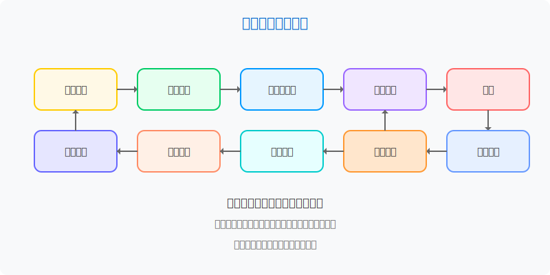

模块二：数据探索与可视化
数据探索与可视化
模块概述
本模块旨在帮助学生掌握探索性数据分析方法和数据可视化技术。数据探索与可视化是连接数据收集和建模的关键环节，可以帮助理解数据特征、发现隐藏模式、识别异常值，并为后续分析提供方向。通过有效的可视化，可以将复杂的数据转化为直观的视觉表现，增强数据洞察和沟通效果。

学习目标
完成本模块学习后，您将能够：
- 理解探索性数据分析(EDA)的核心概念和方法
- 选择合适的统计方法分析数据分布和关系
- 掌握不同类型数据的可视化技术
- 创建有效的静态和交互式数据可视化
- 使用可视化讲述数据故事，支持决策
探索性数据分析
探索性数据分析(EDA)的主要目标
- 了解数据结构和特征
- 数据形状、类型和组成
- 变量分布和统计特性
- 缺失值和异常模式
- 识别关键模式和关系
- 变量之间的相关性
- 时间趋势和周期性
- 分组差异和聚类倾向
- 生成假设和洞察
- 潜在因果关系
- 需要进一步调查的问题
- 建模方法选择的依据
数据探索方法
描述性统计
描述性统计提供数据的摘要信息，帮助理解数据的基本特征：
- 中心趋势（均值、中位数、众数）
- 离散程度（方差、标准差、范围）
- 分布形状（偏度、峰度）
- 分位数和异常值
分布分析
了解数据的分布特性对于选择合适的分析方法和解释结果至关重要：
- 单变量分布（直方图、密度图、箱线图）
- 多峰分布识别
- 正态性检验
- 概率分布拟合
相关性分析
相关性分析帮助发现变量之间的关系：
- 相关系数（Pearson、Spearman、Kendall）
- 相关矩阵和热图
- 散点图矩阵
- 条件分布和分组比较
时间序列分析
对于随时间变化的数据，时间序列分析可以揭示重要模式：
- 趋势分析
- 季节性和周期性
- 自相关和交叉相关
- 时间分解（趋势、季节性、残差）
数据可视化技术
基础图表类型
- 分类数据可视化：条形图、饼图、树图
- 连续数据可视化：直方图、密度图、箱线图
- 关系可视化：散点图、气泡图、热图
- 组成可视化：面积图、堆叠图、瀑布图
- 时间序列可视化：线图、烛台图、河流图
多维数据可视化
- 多变量关系：散点图矩阵、平行坐标图
- 高维数据降维：PCA、t-SNE、UMAP可视化
- 层次结构：树状图、桑基图、嵌套图
- 网络关系：网络图、力导向图、弦图
地理空间可视化
- 地图类型：点地图、热力地图、等值线图
- 区域图：填充地图、分级统计图
- 流动图：路径图、连线图
- 地理坐标系统：投影、比例和范围
交互式可视化
- 交互技术：缩放、过滤、钻取、提示
- 动态图表：动画过渡、时间序列播放
- 参数控制：滑块、下拉菜单、按钮
- 仪表板设计：多图协调、布局策略
数据可视化原则
可视化设计原则
- 简洁性：减少图表中的非数据元素
- 可比性：确保数据可以公平比较
- 整合性：整合多个视图传达完整信息
- 聚焦性：突出关键信息和洞察
数据编码
- 位置编码：利用空间位置表示数据（最有效）
- 长度和大小：条形长度、圆面积等
- 角度和方向：扇形角度、线条斜率
- 颜色和图案：色调、饱和度、明度、纹理
可视化陷阱与伦理
- 避免误导：合适的坐标轴和比例
- 处理不确定性：表示误差和置信区间
- 色彩可及性：考虑色盲用户的色彩选择
- 上下文完整性：提供必要背景信息
推荐工具
Python生态系统提供了丰富的数据探索和可视化工具：
- 探索性分析工具
- Pandas: 数据操作与分析
- NumPy: 数值计算
- SciPy: 科学计算和统计
- Pandas-Profiling: 自动化EDA报告
- 可视化工具
- Matplotlib: 基础绘图库
- Seaborn: 统计数据可视化
- Plotly: 交互式可视化
- Bokeh: 大数据交互式可视化
- Altair: 声明式可视化
- Folium/GeoPlotlib: 地理空间可视化
- 仪表板工具
- Streamlit: 快速创建数据应用
- Dash: 交互式Web应用
- Panel/HoloViews: 可交互数据面板
学习资源
基础教程
- Python Graph Gallery: 各类图表示例和代码
- Seaborn 教程: 统计可视化入门
- Plotly Express 文档: 交互式图表快速入门
进阶资源
- Fundamentals of Data Visualization by Claus O. Wilke
- Storytelling with Data by Cole Nussbaumer Knaflic
- Interactive Data Visualization for the Web by Scott Murray
在线课程
- Information Visualization (Coursera)
- Data Visualization with Python (Coursera)
- Data Visualization and D3.js (Udacity)
进阶探索方向
- 高级交互可视化: D3.js, WebGL
- 沉浸式数据可视化: AR/VR数据可视化
- 可视化系统设计: 可视化语法与系统架构
- 可视分析学: 结合可视化与分析方法
- 科学可视化: 物理模拟与科学数据可视化